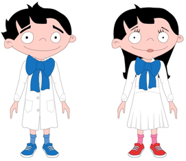

Para estar sanos y poder cuidarnos y cuidar a los demás, es importante aprender sobre los hábitos saludables. De esta forma podremos gozar de una buena salud. Es un derecho que tienen todas las personas. Para esto, es importante conocer de qué manera debemos alimentarnos para lograr una nutrición sana.

En los siguientes párrafos vamos a aprender más sobre alimentación y nutrición.
¡Bienvenidos!